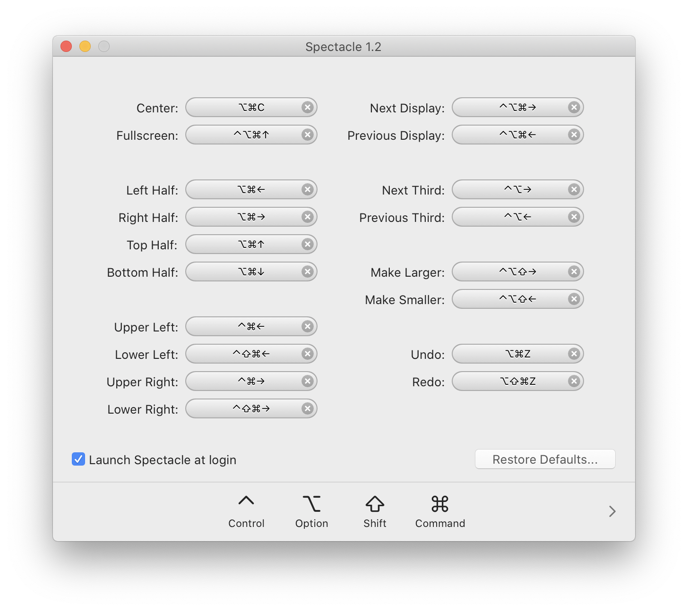
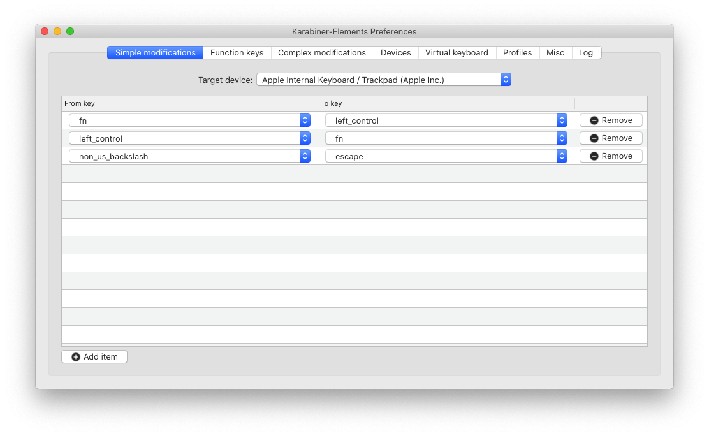
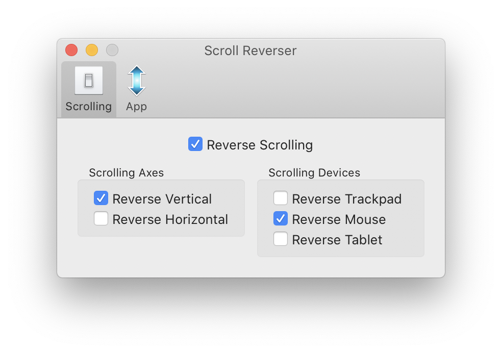

Mac OS apps for ex-Windows users
Not that long ago my curiosity and boredom overtook me and I finally pulled the trigger and moved from Windows to Mac OS. Being a Windows power user for the past 15 years you can imagine this was quite the change for me. Mac OS is in many ways amazing, however, it can also be very frustrating. As someone who is obsessed with workflow optimization, I simply could not adapt to some of the Mac OS limitations and had to find third party solutions. Here are the 5 apps that kept my frustration levels under control when, I had just switched to using a Mac. Honestly, I would be back on Windows if not for these…
Spectacle
One of the classic features of Windows that I used constantly is window snapping. This is such a simple feature and yet it is not available on Mac OS. Allegedly, Microsoft have patented the method and if you want to have this feature on Mac OS you will need to use a third party tool. When looking for one there were quite some choices, but most apps were either too complicated or too expensive. All I needed were two features: snap to the left half and right half, and snap to full screen. The application I was able to find that could do those for free is Spectacle. It is a simple to use app and has all the basic snapping features a windows user might want.
Spectacle is free to download here.

Karabiner-Elements
The infamous touch bar. This is probably the single most annoying Mac feature for me — and especially the virtual escape key. Although this was something I thought I could get used to, but with time I realized that the touch bar not only did not serve any purpose for me but would on the contrary cause even more problems. I understood that to be able to use a Mac I had to remap my escape key to something else. This is where Karabiner-Elements came in. It is a very powerful piece of software enabling you to fully customize your keyboard on a Mac.
The first thing I did was of course remapping my escape key to the key next to the 1. Luckily (or rather unluckily), I have a UK keyboard and I only had to sacrifice probably the most useless key ever put on a keyboard (§ / ±).
While I was at it I also swapped the fn and control round, back to the way I was used to having them.
Karabiner-Elements is free to download here. 
Scroll Reverser
What you will notice when connecting a mouse to your Mac, is that if that mouse happens to have a scroll wheel, the scrolling direction will be the inverse of what a Windows user would be used to. “No problem,” you say, “let me just change the scrolling direction in the System Preferences.” Well, not so fast. If you do that, the scrolling will change both for the trackpad and the mouse which is also not ideal. I soon realized that what I actually needed is a separate scrolling control for the mouse and the trackpad. Oddly enough, Mac OS does give you that option. The solution I found was Scroll Reverser, this app is minimal and just works.
Scroll Reverser is free to download here. 
MiddleClick
This is a niche one but if you do use X terminals you may know that there are two ways of pasting text into it: either by hitting shift + insert or the other way is to use the middle click on a mouse. When working on a terminal I rarely use the mouse and I want to be able to efficiently copy text by simply typing a keyboard shortcut (shift + insert). Unfortunately, the insert key is nowhere to be seen on a Mac and the alternatives that I found online on how to replicate it were not that convenient. Then I remembered the triple-tap feature from Linux laptops I had used earlier. This feature would emulate the middle click on a mouse but using the touch pad. This is when I found MiddleClick. Not much to be said about this app, it does only one thing, it will produce a middle click when you touch the trackpad with 3 fingers. It is not the best replacement for the insert key but, so far its been doing the job well.
MiddleClick is free to download here.
Macs Fan Control
Macs come with a beautiful, sleek aluminum body. That is very nice, but aluminum happens to be a pretty good thermal conductor and if you ever had to run heavy workloads in the summer you know what I am on about. Macs do tend to run much warmer than my palms can handle, so I figured I wanted to create a cooling profile that is catered for the comfort of my hands. Macs Fan Control is the app that lets you do it. Luckily, Macs have a number of temperature sensors all over the place, so you can configure, your cooling preferences pretty accurately for your convenience.